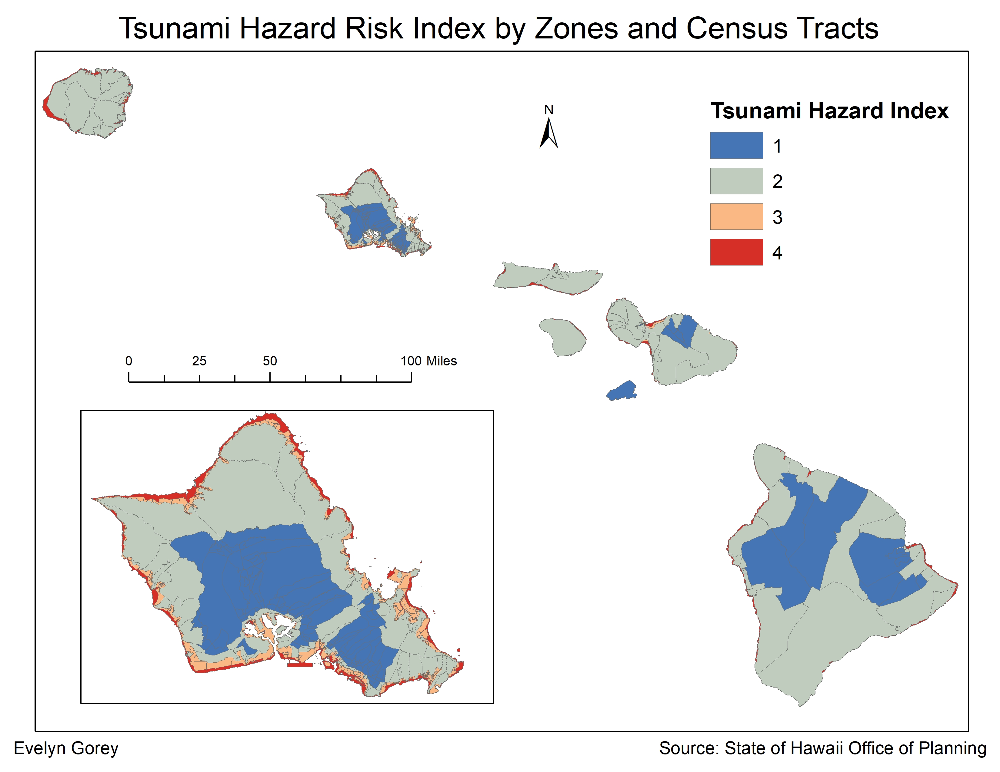
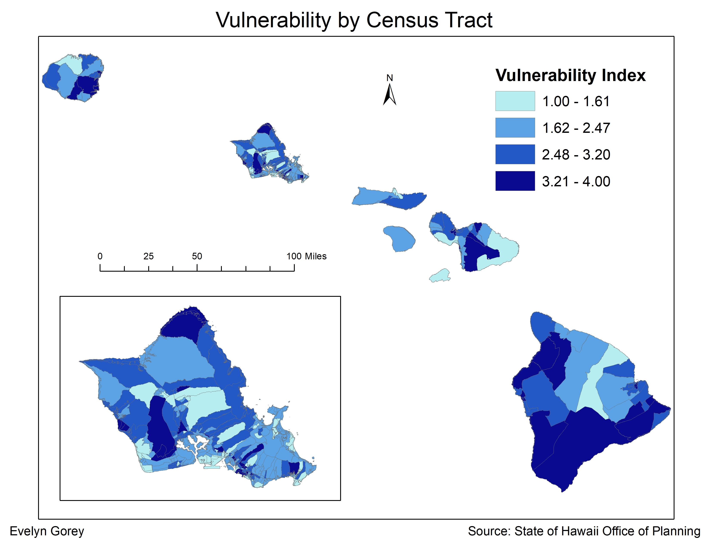
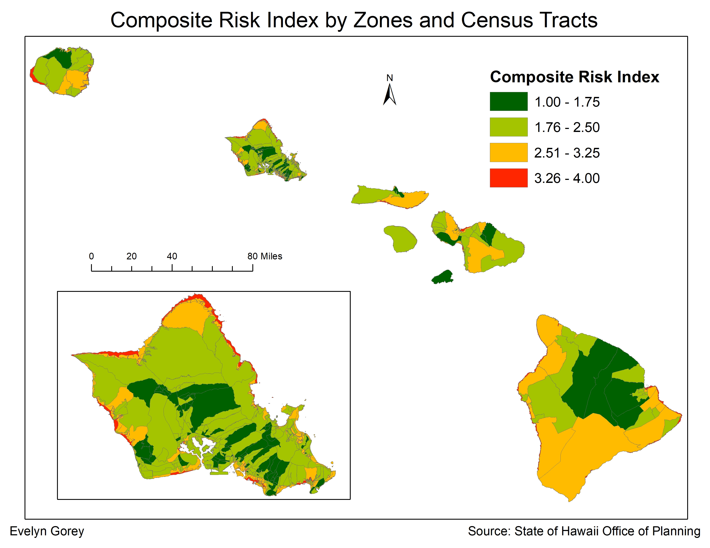

Tsunami Hazard & Vulnerability Mapping in Hawaii

Below are the results of my final project for Environmental GIS (Spring 2019), which was titled Tsunami Hazard & Vulnerability Mapping in Hawaii. The project involved creating weighted hazard and vulnerability indexes to produce an overall Composite Risk Index map. Data was obtained from the GIS Department for the State of Hawaii and from the U.S. Census Bureau. The hazard index was based on pre-established evacuation zones (based on elevation and historic tsunami zones) within all islands of Hawaii; four hazard zones were ranked and weighted.
The vulnerability index was based on demographic data and broken up into 3 weighted inputs: Exposure (total population), Susceptibility (population over the age of 65, children under the age of 18, median income, and Asian/Pacific Islander population), and Coping Capacity (number of one-person households). All had equal weights of 0.3 to create the vulnerability Index. Both the hazard and vulnerability indexes had equal weights of 0.5 to create the Composite Risk Index.
Hazard Risk Index

Hazard zones include 4 (most hazardous; evacuation zones), 3 (hazardous; zones which will be evacuated only in extreme cases), 2 (less hazardous; census tracts neighboring extreme hazardous zones), and 4 (not hazardous; tracts not touching zones 3 & 4).
Vulnerability Index

The map above depicts the vulnerability index as applied to Hawaii's census tracts. The darkest shade of blue represents the most vulnerable tracts (3.21 - 4) while the lightest shade of blue represents the least vulnerable tracts (1 - 1.61). These scores are derived from the aggregated weights of each aforementioned demographic measure.
Composite Risk Index

The map above depicts the Composite Risk Index spread across both hazard zones and census tracts; this index is the aggregated product of the equally weighted hazard and vulnerability indices. The product closely resembles the hazard index map in that the most hazardous zones are still that of the evacuation zones, but it includes pertinent population vulnerability data as well. The red zones (3.26 - 4) are most hazardous, while the dark green zones (1 - 1.75) are the least hazardous. Zones/tracts were divided into four categories ranging from 1 (least hazardous) to 4 (most hazardous) using the Natural Breaks (Jenks) classification.
get in touch
Thank you for stopping by! If you'd like to get in touch, please feel free to email me at the address below or send me a message on my LinkedIn.
Email Me
michelle.evelyn2@gmail.com